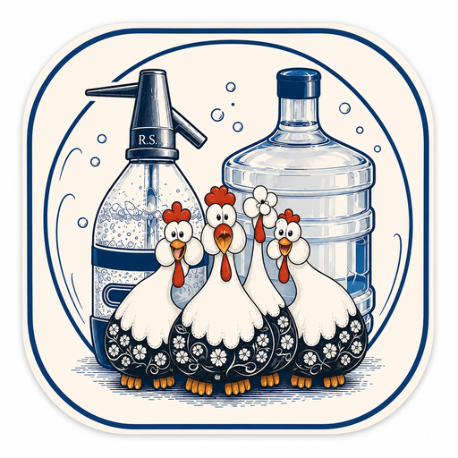

Para tener el ícono en tu pantalla de inicio, tocá el botón de compartir de tu navegador y elegí "Agregar a pantalla de inicio". Una vez agregada, entrando desde ese ícono vas a ir directo a la app.